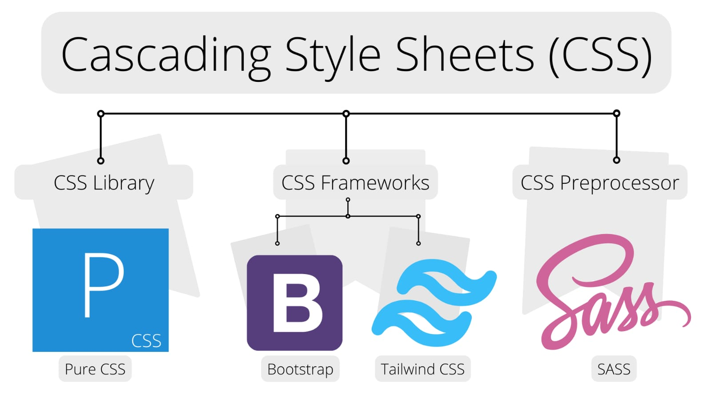

The HyperText Markup Language or HTML is the standard markup language for documents designed to be displayed in a web browser.
Cascading Style Sheets (CSS) is a style sheet language used for describing the presentation of a document written in a markup language such as HTML or XML

- Pure CSS
- Bootstrap (Framework)
- Tailwind (Framework)
- Sass (Framework)
JavaScript often abbreviated JS, is a programming language that is one of the core technologies of the World Wide Web, alongside HTML and CSS. It is use to add functionality in the website.